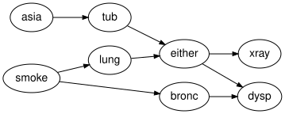

Serialisation, provenance and CatColab export
Simon Frost
- Overview
- Setup
- The package’s own JSON
- Interchange formats
- The presentation of the free Markov category
- CatColab export
- The schema emitted by the Lean project
- Summary
- References
Overview
A model has three layers that travel separately: the structure (an ACSet), the semantics (spaces and kernels) and the provenance (evidence and the history of rewrites). This vignette writes and reads the package’s own JSON, reads networks from the interchange formats supported by BayesianNetworkFormats.jl, exports the generators of the free Markov-category presentation, exports the schema and an instance to CatColab’s document format, and checks the schema against the one emitted by the Lean project.
Setup
acset_schema is needed once, for the CatColab round trip at the end.
using BayesianNetworks
using JSON3
using ACSets: acset_schema
m = reference_habitat_model()
mechanism_names(syntax(m))7-element Vector{Symbol}:
:SoilMoisture_mechanism
:Vegetation_mechanism
:HabitatQuality_mechanism
:Occupancy_mechanism
:Climate_mechanism
:Irrigation_mechanism
:GrazingPressure_mechanismThe package’s own JSON
json_bayesnet writes the structure alone, in an envelope that records the format and schema version around ACSets’ own JSON representation. KernelRef attributes become objects with a "type" discriminator.
js = json_bayesnet(syntax(m))
first(js, 120)"{\"format\":\"bayesnet-acset\",\"schema_version\":\"0.1\",\"acset\":{\"Variable\":[{\"_id\":1,\"variable_name\":\"Climate\",\"space_ref\":{\""canonicalize(parse_json_bayesnet(js)) == canonicalize(syntax(m))truejson_model adds the semantics (spaces and kernel tables, flattened column-major), the evidence, the history and the extras. A round trip through a file preserves everything, including the provenance of an intervened model:
m2 = soft_intervention(do_intervention(observe(m, :Climate => :dry), :Vegetation => :dense),
:Occupancy => NamedRef("policy"); parents = [:Vegetation],
note = "occupancy under management")
path = tempname() * ".json"
write_json_model(path, m2)
m3 = read_json_model(path)
(m3 ≈ m2, evidence(m3) == evidence(m2), history(m3) == history(m2))(true, true, true)[(e.kind, e.target, e.note) for e in history(m3)]2-element Vector{Tuple{Symbol, Symbol, String}}:
(:hard, :Vegetation, "")
(:soft, :Occupancy, "occupancy under management")The kernels are keyed by reference, and references are attributes of the syntax, so a reference that does not resolve (here the policy kernel that was never bound) is simply reported as missing:
missing_kernels(m3)1-element Vector{Symbol}:
:OccupancyInterchange formats
read_bayesnet reads Netica .dne, GeNIe .xdsl, HUGIN .net, BIF, DSC and UAI files through BayesianNetworkFormats.jl and returns a BayesModel with every table bound (chance nodes only). The reference network shipped as a fixture in Netica format is the same model as reference_habitat_model():
mf = read_bayesnet(fixture_path("dne/habitat_reference.dne"))
mf ≈ mtrueTitles, positions and comments from the file are kept in extras, outside the semantics:
sort(collect(keys(extras(mf))))9-element Vector{Symbol}:
:comments
:deterministic
:format
:name
:network_extras
:positions
:source
:titles
:variable_extrasThe classic asia network (Lauritzen and Spiegelhalter 1988) in BIF format:
asia = read_bayesnet(fixture_path("bif/asia.bif"))
round.(marginal(asia, :dysp).table; digits = 4)2-element Vector{Float64}:
0.436
0.564to_graphviz(asia; states = false, rankdir = "LR")
write_bayesnet writes in any of the formats; the extension selects the format.
out = tempname() * ".xdsl"
write_bayesnet(out, m)
read_bayesnet(out) ≈ mtrueThe presentation of the free Markov category
presentation_json lists the generators of the free Markov-category presentation behind to_free_expression: one object per variable, with its states, and one morphism per mechanism with its ordered domain, codomain and kernel reference. This is the input for a future Bayesian-network theory in CatColab.
pj = presentation_json(m)
JSON3.pretty(JSON3.write(JSON3.read(pj)[:generators][3])){
"name": "HabitatQuality_mechanism",
"dom": [
"Vegetation"
],
"cod": [
"HabitatQuality"
],
"kernel_ref": {
"type": "NamedRef",
"id": "HabitatQuality_mechanism"
}
}canonicalize(parse_presentation_json(pj)) == canonicalize(syntax(m))trueCatColab export
CatColab does not yet have a Bayesian-network theory, so the export is one-way: the ACSet schema (Patterson et al. 2022) becomes a model of CatColab’s simple-schema theory, and a network becomes a diagram in that model. Identifiers are UUID v5 names in a fixed namespace, so the documents are reproducible.
catcolab_schema_document writes the schema as a model document with one cell per generator. Objects are typed Entity (for Ob) or AttrType, morphisms Hom(Entity) (for homs) or Attr (for attributes):
doc = catcolab_schema_document(BayesNet)
doc["type"], doc["theory"], doc["version"], length(doc["notebook"]["cellOrder"])("model", "simple-schema", "1", 18)The first cell declares the Variable object and the eighth the state_variable morphism:
cell(doc, i) = doc["notebook"]["cellContents"][doc["notebook"]["cellOrder"][i]]
JSON3.pretty(JSON3.write(cell(doc, 1))){
"tag": "formal",
"id": "9a8901a0-0c49-566f-ab4c-a59a5740f158",
"content": {
"tag": "object",
"name": "Variable",
"id": "95c5cb94-973e-56e9-9236-3697a88e9b20",
"obType": {
"tag": "Basic",
"content": "Entity"
}
}
}A morphism cell names its domain and codomain by the UUIDs of the object cells, which is why the identifiers have to be reproducible:
JSON3.pretty(JSON3.write(cell(doc, 8))){
"tag": "formal",
"id": "25bff265-cefd-55b3-8b31-0971020faa49",
"content": {
"tag": "morphism",
"name": "state_variable",
"id": "023bbf48-9d78-5edf-8f2f-3af9a17eff0f",
"morType": {
"tag": "Hom",
"content": {
"tag": "Basic",
"content": "Entity"
}
},
"dom": {
"tag": "Basic",
"content": "2b91654b-e1c1-51d8-a3a9-90f43b060c90"
},
"cod": {
"tag": "Basic",
"content": "95c5cb94-973e-56e9-9236-3697a88e9b20"
}
}
}parse_catcolab_schema reads such a document back (mirroring the parser in CatColab’s Julia interop) and recovers the schema of BayesNet:
parse_catcolab_schema(JSON3.write(doc)) == acset_schema(BayesNet())truecatcolab_instance_document writes a network as a diagram in the schema: one object cell per part, labelled by name, and one morphism cell per hom value.
inst = catcolab_instance_document(reference_habitat_bn(), doc)
cells = [cell(inst, i) for i in eachindex(inst["notebook"]["cellOrder"])]
count(c -> c["content"]["tag"] == "object", cells), count(c -> c["content"]["tag"] == "morphism", cells)(37, 36)JSON3.pretty(JSON3.write(cells[1]["content"])){
"tag": "object",
"name": "Climate",
"id": "5467c7dd-b51b-5211-b8c4-14f86af97670",
"obType": {
"tag": "Basic",
"content": "Entity"
},
"over": {
"tag": "Basic",
"content": "95c5cb94-973e-56e9-9236-3697a88e9b20"
}
}The catlog-side Model{obGenerators, morGenerators} shape consumed by CatColab’s Julia interop is available as catcolab_model(BayesNet).
The schema emitted by the Lean project
The Lean project in proofs/ (Moura and Ullrich 2021; The mathlib Community 2020) defines the same schema and emits it as ACSets JSON with lake exe emit_schema. The test suite compares it with schema_json(BayesNet), ignoring the version block; the same check is reproduced here when the emitted file is present.
lean_file = joinpath(pkgdir(BayesianNetworks), "proofs", "schemas", "bayesnet.schema.json")
strip_version(x) = filter(kv -> kv.first != :version, copy(JSON3.read(JSON3.write(x))))
if isfile(lean_file)
lean = strip_version(JSON3.read(read(lean_file, String)))
lean == strip_version(schema_json(BayesNet))
else
"proofs/schemas/bayesnet.schema.json not emitted in this checkout"
endtrue[d["name"] for d in schema_json(BayesNet)["Hom"]]4-element Vector{String}:
"state_variable"
"target"
"input_mechanism"
"input_variable"Summary
Structure, semantics and provenance are written and read separately: json_bayesnet carries the ACSet alone, json_model adds kernels, evidence and the history of rewrites, and the interchange readers bring in networks written by Netica, GeNIe, HUGIN and the BIF and DSC tools, keeping their titles and layout in extras rather than in the semantics. The presentation and CatColab exports expose the same model as a categorical presentation, and the Lean-emitted schema is compared against the Julia @present so the two stay in step. The next vignette, Dynamic Bayesian networks, builds time-indexed models that unroll into ordinary ones.
References
<div id="refs" class="references csl-bib-body hanging-indent">
<div id="ref-LauritzenSpiegelhalter1988" class="csl-entry">
Lauritzen, Steffen L., and David J. Spiegelhalter. 1988. “Local Computations with Probabilities on Graphical Structures and Their Application to Expert Systems.” Journal of the Royal Statistical Society, Series B 50 (2): 157–224. https://doi.org/10.1111/j.2517-6161.1988.tb01721.x.
</div>
<div id="ref-deMouraUllrich2021" class="csl-entry">
Moura, Leonardo de, and Sebastian Ullrich. 2021. “The Lean 4 Theorem Prover and Programming Language.” Automated Deduction (CADE 28), Lecture notes in computer science, vol. 12699: 625–35. https://doi.org/10.1007/978-3-030-79876-5_37.
</div>
<div id="ref-PattersonLynchFairbanks2022" class="csl-entry">
Patterson, Evan, Owen Lynch, and James Fairbanks. 2022. “Categorical Data Structures for Technical Computing.” Compositionality 4 (5). https://doi.org/10.32408/compositionality-4-5.
</div>
<div id="ref-Mathlib2020" class="csl-entry">
The mathlib Community. 2020. “The Lean Mathematical Library.” Proceedings of the 9th ACM SIGPLAN International Conference on Certified Programs and Proofs (CPP 2020), 367–81. https://doi.org/10.1145/3372885.3373824.
</div>
</div>